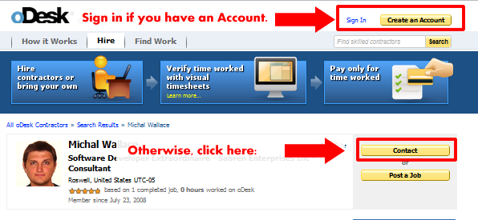
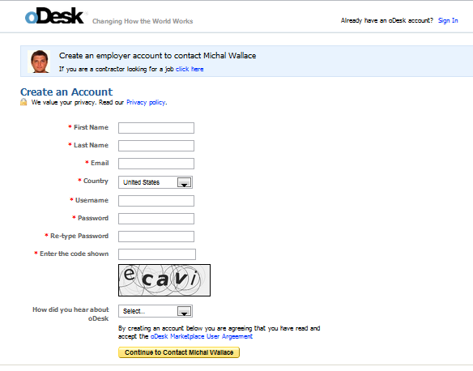
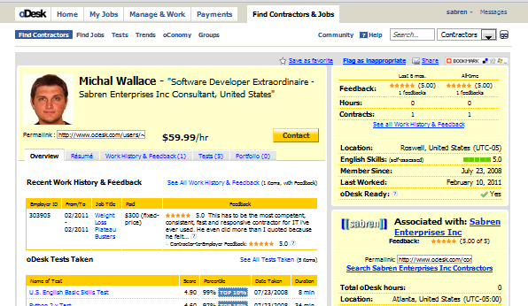
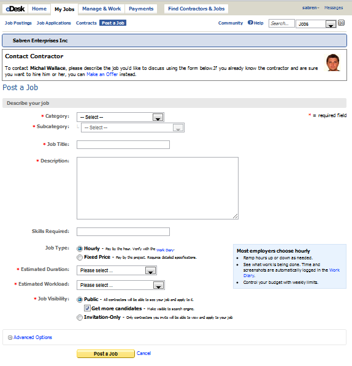

If you already have an odesk account, you should sign in first, and skip to step 3.


(This is what you see when you click "hire me" and you're already logged in. If you just created your account, it may take you directly to step 4.)

Describe what you need done, and it will automatically invite me to apply for the job.
Note the "job visibility" - if you don't want other people to bid on this job, set it to "Invitation-Only".

Whew. The worst is over!
I will respond via oDesk, and it'll send you an email so you can hire me and I can get started working for you!